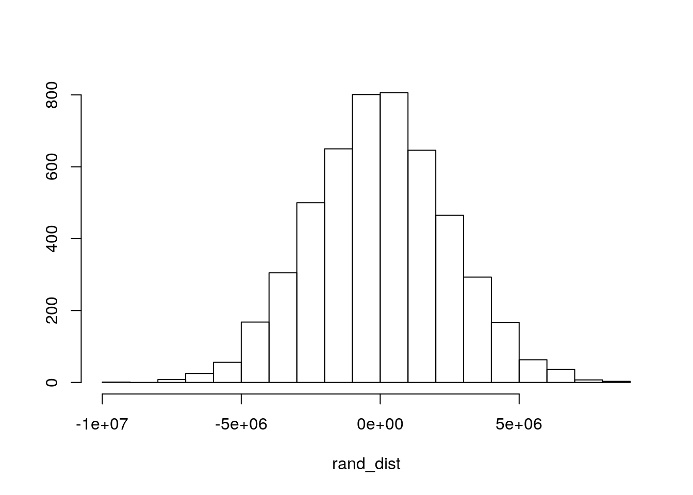

May 15, 2020
R Markdown
This is an R Markdown document. Markdown is a simple formatting syntax for authoring HTML, PDF, and MS Word documents. For more details on using R Markdown see http://rmarkdown.rstudio.com.
When you click the Knit button a document will be generated that includes both content as well as the output of any embedded R code chunks within the document. You can embed an R code chunk like this:
Introduction
install.packages("fivethirtyeight")## Installing package into '/stor/home/elm2795/R/x86_64-pc-linux-gnu-library/3.4'
## (as 'lib' is unspecified)library(fivethirtyeight)
women <- as.data.frame(bechdel)
women$b <- ifelse(women$binary=="PASS",1,0)
women <- na.omit(women)
library(dplyr)##
## Attaching package: 'dplyr'## The following objects are masked from 'package:stats':
##
## filter, lag## The following objects are masked from 'package:base':
##
## intersect, setdiff, setequal, unionlibrary(tidyverse)## ── Attaching packages ──────────────────────────────────────────────────────── tidyverse 1.3.0 ──## ✔ ggplot2 3.3.0 ✔ purrr 0.3.3
## ✔ tibble 2.1.3 ✔ stringr 1.4.0
## ✔ tidyr 1.0.0.9000 ✔ forcats 0.4.0
## ✔ readr 1.3.1## ── Conflicts ─────────────────────────────────────────────────────────── tidyverse_conflicts() ──
## ✖ dplyr::filter() masks stats::filter()
## ✖ dplyr::lag() masks stats::lag()women <- women%>%rename(ct=clean_test)
head(women)## year imdb title test ct binary budget
## 1 2013 tt1711425 21 & Over notalk notalk FAIL 13000000
## 2 2012 tt1343727 Dredd 3D ok-disagree ok PASS 45000000
## 3 2013 tt2024544 12 Years a Slave notalk-disagree notalk FAIL 20000000
## 4 2013 tt1272878 2 Guns notalk notalk FAIL 61000000
## 5 2013 tt0453562 42 men men FAIL 40000000
## 6 2013 tt1335975 47 Ronin men men FAIL 225000000
## domgross intgross code budget_2013 domgross_2013 intgross_2013
## 1 25682380 42195766 2013FAIL 13000000 25682380 42195766
## 2 13414714 40868994 2012PASS 45658735 13611086 41467257
## 3 53107035 158607035 2013FAIL 20000000 53107035 158607035
## 4 75612460 132493015 2013FAIL 61000000 75612460 132493015
## 5 95020213 95020213 2013FAIL 40000000 95020213 95020213
## 6 38362475 145803842 2013FAIL 225000000 38362475 145803842
## period_code decade_code b
## 1 1 1 0
## 2 1 1 1
## 3 1 1 0
## 4 1 1 0
## 5 1 1 0
## 6 1 1 0I have chosen the data set “bechdel” to analyze the inclusion of women in Hollywood movies. The categorical variables are imdb, title, test, clean_test, and code. The numeric variables are binary, budget, domgross, intgross, budget_2013, domgross_2013, intgross_2013, period_code, and decade_code. The original data was named after Allison Bechdel who created a test to see if the film included female characters or not. If a film named two women in a scene, they had a conversation with each other, and their conversation was not about a man, then the film “passed” the test. This data analyzed includes 1,794 observations and recorded whether the film passed or not, the budget, domestic income, and international income. The money spent and earned was adjusted to match inflation rates in 2013, since the films analyzed include those from the 1970s.
MANOVA
You can also embed plots, for example:
ggplot(women, aes(x = budget_2013, y = domgross_2013)) + geom_point(alpha = .5) + geom_density_2d(h=2) + coord_fixed() + facet_wrap(~ct)## Warning: stat_contour(): Zero contours were generated## Warning in min(x): no non-missing arguments to min; returning Inf## Warning in max(x): no non-missing arguments to max; returning -Inf## Warning: stat_contour(): Zero contours were generated## Warning in min(x): no non-missing arguments to min; returning Inf## Warning in max(x): no non-missing arguments to max; returning -Inf## Warning: stat_contour(): Zero contours were generated## Warning in min(x): no non-missing arguments to min; returning Inf## Warning in max(x): no non-missing arguments to max; returning -Inf## Warning: stat_contour(): Zero contours were generated## Warning in min(x): no non-missing arguments to min; returning Inf## Warning in max(x): no non-missing arguments to max; returning -Inf## Warning: stat_contour(): Zero contours were generated## Warning in min(x): no non-missing arguments to min; returning Inf## Warning in max(x): no non-missing arguments to max; returning -Infman1<-manova(cbind(budget_2013, domgross_2013, intgross_2013)~ct, data=women)
summary(man1)## Df Pillai approx F num Df den Df Pr(>F)
## ct 4 0.039395 5.3059 12 4785 5.572e-09 ***
## Residuals 1595
## ---
## Signif. codes: 0 '***' 0.001 '**' 0.01 '*' 0.05 '.' 0.1 ' ' 1summary.aov(man1)## Response budget_2013 :
## Df Sum Sq Mean Sq F value Pr(>F)
## ct 4 1.5648e+17 3.9120e+16 12.816 2.855e-10 ***
## Residuals 1595 4.8686e+18 3.0524e+15
## ---
## Signif. codes: 0 '***' 0.001 '**' 0.01 '*' 0.05 '.' 0.1 ' ' 1
##
## Response domgross_2013 :
## Df Sum Sq Mean Sq F value Pr(>F)
## ct 4 1.4235e+17 3.5588e+16 3.6586 0.005664 **
## Residuals 1595 1.5515e+19 9.7272e+15
## ---
## Signif. codes: 0 '***' 0.001 '**' 0.01 '*' 0.05 '.' 0.1 ' ' 1
##
## Response intgross_2013 :
## Df Sum Sq Mean Sq F value Pr(>F)
## ct 4 9.6182e+17 2.4046e+17 3.6195 0.006064 **
## Residuals 1595 1.0596e+20 6.6433e+16
## ---
## Signif. codes: 0 '***' 0.001 '**' 0.01 '*' 0.05 '.' 0.1 ' ' 1women%>%group_by(ct)%>%summarize(mean(budget_2013),mean(domgross_2013),mean(intgross_2013))## # A tibble: 5 x 4
## ct `mean(budget_2013)` `mean(domgross_2013)` `mean(intgross_2013)`
## <ord> <dbl> <dbl> <dbl>
## 1 nowomen 65472900. 74606246. 173735249.
## 2 notalk 69829341. 97743812. 222021962.
## 3 men 59813043. 87298025. 187938516.
## 4 dubious 62751722. 87875132. 205241655.
## 5 ok 47343994. 76317777. 165255435.1-(.95^19)## [1] 0.62264640.05/19## [1] 0.002631579pairwise.t.test(women$budget_2013, women$ct, p.adj = "none")##
## Pairwise comparisons using t tests with pooled SD
##
## data: women$budget_2013 and women$ct
##
## nowomen notalk men dubious
## notalk 0.44625 - - -
## men 0.39384 0.04531 - -
## dubious 0.70234 0.20852 0.65406 -
## ok 0.00095 1.5e-11 0.00832 0.00422
##
## P value adjustment method: nonepairwise.t.test(women$domgross_2013, women$ct, p.adj = "none")##
## Pairwise comparisons using t tests with pooled SD
##
## data: women$domgross_2013 and women$ct
##
## nowomen notalk men dubious
## notalk 0.02354 - - -
## men 0.28416 0.24203 - -
## dubious 0.29662 0.32589 0.96068 -
## ok 0.86100 0.00029 0.19264 0.22880
##
## P value adjustment method: nonepairwise.t.test(women$intgross_2013, women$ct, p.adj = "none")##
## Pairwise comparisons using t tests with pooled SD
##
## data: women$intgross_2013 and women$ct
##
## nowomen notalk men dubious
## notalk 0.07047 - - -
## men 0.64645 0.14415 - -
## dubious 0.34296 0.52265 0.57167 -
## ok 0.73992 0.00024 0.30304 0.11117
##
## P value adjustment method: noneA one-way MANOVA was conducted to determine if level of inclusivity of women in films has an effect on the budget, domestic gross earnings and international gross earnings. The MANOVA was significant so the level of inclusivity (ct) affects budget, domestic earnings and/or international earnings. A total of 19 tests were conducted. Therfore the chance of Type I error is 0.6226464 and the adjusted p-value is 0.002631579. Next Univariate ANOVAs were performed, and based on the adjusted significance level, ct only had a significant effect on budget_2013. Post-hoc t-tests were performed for budget_2013, domgross_2013, and intgross_2013. In the post-hoc test for budget_2013 and ct, there was a significant difference in budget between “ok” and “nowomen”, and between “ok” and “notalk”. In the post-hoc test for domgross_2013 and ct, there was a significant difference in domestic gross earnings between “notalk” and “ok”. In the post-hoc test for intgross_2013 and ct, there was a significant difference in international gross earnings between “notalk” and “ok”. The DV plot was irregular, therefore indicating and assumptions were violated. This is not surprising because MANOVA has many assumptions and it is very difficult to meet all of them.
Randomization Test
women%>%group_by(binary)%>%summarize(means=mean(budget))%>%summarize(`mean_diff:`=diff(means))## # A tibble: 1 x 1
## `mean_diff:`
## <dbl>
## 1 -16065800.head(perm1<-data.frame(condition=women$binary,budget=sample(women$budget)))## condition budget
## 1 FAIL 40000000
## 2 PASS 2750000
## 3 FAIL 30000000
## 4 FAIL 9900000
## 5 FAIL 25000000
## 6 FAIL 17500000perm1%>%group_by(condition)%>%summarize(means=mean(budget))%>%summarize(`mean_diff:`=diff(means))## # A tibble: 1 x 1
## `mean_diff:`
## <dbl>
## 1 4452102.head(perm2<-data.frame(condition=women$binary,budget=sample(women$budget))) ## condition budget
## 1 FAIL 7000000
## 2 PASS 11000000
## 3 FAIL 80000000
## 4 FAIL 45000000
## 5 FAIL 65000000
## 6 FAIL 25000000perm2%>%group_by(condition)%>%
summarize(means=mean(budget))%>%summarize(`mean_diff:`=diff(means))## # A tibble: 1 x 1
## `mean_diff:`
## <dbl>
## 1 2746111.rand_dist<-vector()
for(i in 1:5000){
new<-data.frame(budget=sample(women$budget),condition=women$binary)
rand_dist[i]<-mean(new[new$condition=="PASS",]$budget)-
mean(new[new$condition=="FAIL",]$budget)}
{hist(rand_dist,main="",ylab=""); abline(v = -16065800 ,col="red")}
mean(rand_dist>16065800 | rand_dist< -16065800)## [1] 0t.test(data = women, budget~binary)##
## Welch Two Sample t-test
##
## data: budget by binary
## t = 6.6356, df = 1593.8, p-value = 4.414e-11
## alternative hypothesis: true difference in means is not equal to 0
## 95 percent confidence interval:
## 11316855 20814745
## sample estimates:
## mean in group FAIL mean in group PASS
## 55857716 39791916The null hypothesis is that there is no difference in the mean budget for films based on the level of female inclusion in the film (ct). The alternative hypothesis is that there is at least one difference in the budget between the films based on the different levels of female inclusion in the film. After running a two-tailed p-value test, I get a vlaue of 0. This means that there are no randomized mean_diffs that are more extreme than the actual difference of means. After running a Welch t-test, the p-value is very small. Therefore, I reject the null hypothesis and conclude there a difference in the budget in at least one of the ct levels.
Linear Regression
women$b_c <- (b_c = women$budget_2013 - mean(women$budget_2013))
women$i_c <- (i_c = women$intgross_2013 - mean(women$intgross_2013, na.rm=T))
women$ct <- factor(women$ct, ordered = FALSE)
fit <- lm(i_c~b_c+ct, data = women); summary(fit)##
## Call:
## lm(formula = i_c ~ b_c + ct, data = women)
##
## Residuals:
## Min 1Q Median 3Q Max
## -626226746 -75684871 -17572571 34683118 2222560984
##
## Coefficients:
## Estimate Std. Error t value Pr(>|t|)
## (Intercept) -3.934e+07 1.715e+07 -2.294 0.02192 *
## b_c 3.228e+00 8.436e-02 38.266 < 2e-16 ***
## ctnotalk 3.422e+07 1.927e+07 1.776 0.07589 .
## ctmen 3.247e+07 2.236e+07 1.452 0.14665
## ctdubious 4.029e+07 2.399e+07 1.680 0.09321 .
## ctok 5.004e+07 1.851e+07 2.704 0.00693 **
## ---
## Signif. codes: 0 '***' 0.001 '**' 0.01 '*' 0.05 '.' 0.1 ' ' 1
##
## Residual standard error: 186100000 on 1594 degrees of freedom
## Multiple R-squared: 0.4835, Adjusted R-squared: 0.4819
## F-statistic: 298.4 on 5 and 1594 DF, p-value: < 2.2e-16ggplot(women, aes(x=b_c, y=i_c,group=ct))+geom_point(aes(color=ct))+
geom_smooth(method="lm",formula=y~1,se=F,fullrange=T,aes(color=ct))+
theme(legend.position=c(.9,.19))+xlab("")resids<-fit$residuals
fitvals<-fit$fitted.values
ggplot()+geom_point(aes(fitvals,resids))+geom_hline(yintercept=0, color='red')
ggplot()+geom_histogram(aes(resids))+stat_bin()## `stat_bin()` using `bins = 30`. Pick better value with `binwidth`.library(sandwich)
library(lmtest)## Loading required package: zoo##
## Attaching package: 'zoo'## The following objects are masked from 'package:base':
##
## as.Date, as.Date.numericcoeftest(fit, vcov = vcovHC(fit))##
## t test of coefficients:
##
## Estimate Std. Error t value Pr(>|t|)
## (Intercept) -3.9338e+07 1.4596e+07 -2.6950 0.007112 **
## b_c 3.2281e+00 2.0865e-01 15.4714 < 2.2e-16 ***
## ctnotalk 3.4224e+07 1.7252e+07 1.9838 0.047454 *
## ctmen 3.2474e+07 2.1976e+07 1.4777 0.139689
## ctdubious 4.0291e+07 2.2935e+07 1.7568 0.079151 .
## ctok 5.0042e+07 1.6927e+07 2.9564 0.003158 **
## ---
## Signif. codes: 0 '***' 0.001 '**' 0.01 '*' 0.05 '.' 0.1 ' ' 1The GLM for this data is analyzing the effect of budget and ct on the international gross earnings of various films. The coefficients indicate that when controlling for all other variables, a one unit increase in a variable will increase the international gross earnings by a certain amount. For example, when controlling for all other variables, a one unit increase in budget will increase the international gross earnings by 2.0865e-01. Overall, this model is not a good predictor of the data because only 0.4819 the variance can be explained by the model. When the data is recomputed to account for robust standard errors, b_c, ctnotalk, and ctok have a significant effect on the international gross earnings. In the original model only b_c and ctok were significant. Additionally, the standard errors decrease in the recomputed model.
Linear Regression with Interaction
fit2 <- lm(i_c~b_c*ct, data = women); summary(fit2)##
## Call:
## lm(formula = i_c ~ b_c * ct, data = women)
##
## Residuals:
## Min 1Q Median 3Q Max
## -667445294 -75755148 -17826551 31580472 2179345923
##
## Coefficients:
## Estimate Std. Error t value Pr(>|t|)
## (Intercept) -3.287e+07 1.726e+07 -1.905 0.05699 .
## b_c 2.421e+00 2.907e-01 8.329 < 2e-16 ***
## ctnotalk 2.922e+07 1.946e+07 1.502 0.13333
## ctmen 2.556e+07 2.244e+07 1.139 0.25483
## ctdubious 3.339e+07 2.409e+07 1.386 0.16594
## ctok 4.537e+07 1.860e+07 2.439 0.01484 *
## b_c:ctnotalk 6.881e-01 3.293e-01 2.090 0.03680 *
## b_c:ctmen 9.967e-01 3.649e-01 2.731 0.00638 **
## b_c:ctdubious 8.886e-01 3.980e-01 2.232 0.02573 *
## b_c:ctok 9.848e-01 3.213e-01 3.065 0.00221 **
## ---
## Signif. codes: 0 '***' 0.001 '**' 0.01 '*' 0.05 '.' 0.1 ' ' 1
##
## Residual standard error: 185700000 on 1590 degrees of freedom
## Multiple R-squared: 0.487, Adjusted R-squared: 0.4841
## F-statistic: 167.7 on 9 and 1590 DF, p-value: < 2.2e-16resids<-fit2$residuals
fitvals<-fit2$fitted.values
ggplot()+geom_point(aes(fitvals,resids))+geom_hline(yintercept=0, color='red')ggplot()+geom_histogram(aes(resids))+stat_bin()## `stat_bin()` using `bins = 30`. Pick better value with `binwidth`.boot_dat<- sample_frac(women, replace=T)
set.seed(348)
samp_distn<-replicate(5000, {
boot_dat <- sample_frac(women, replace=T)
fit <- lm(i_c~b_c*ct, data=boot_dat)
coef(fit)
})
samp_distn %>% t %>% as.data.frame %>% summarize_all(sd)## (Intercept) b_c ctnotalk ctmen ctdubious ctok b_c:ctnotalk
## 1 12754689 0.3018472 14973115 19177814 20497484 15949079 0.3715058
## b_c:ctmen b_c:ctdubious b_c:ctok
## 1 0.8844402 0.5297428 0.4617088In the GLM model including interaction, b_c, ctok, b_c:ctnotalk, b_c:ctmen, b_c:ctdubious, and b_c:ctok have a significant effect on international gross earnings. The p-values on the interaction model when compared to the GLM without interaction. When the interaction model is recomputed to account for bootstapped robust errors, the standard errors change. In the recomputed model the standard errors for b_c, b_c:notalk, b_c:men, and b_c:ok decreased, but the rest of the standard errors increased or remained the same. It is expected for standard error to increase with the interaction model.
Logistic Regression
fit3<-glm(b~i_c+b_c,data=women,family=binomial); summary(fit3)##
## Call:
## glm(formula = b ~ i_c + b_c, family = binomial, data = women)
##
## Deviance Residuals:
## Min 1Q Median 3Q Max
## -1.3991 -1.1521 -0.8035 1.1543 2.0510
##
## Coefficients:
## Estimate Std. Error z value Pr(>|z|)
## (Intercept) -1.511e-01 5.106e-02 -2.960 0.00308 **
## i_c 6.028e-10 2.824e-10 2.134 0.03282 *
## b_c -8.441e-09 1.360e-09 -6.206 5.44e-10 ***
## ---
## Signif. codes: 0 '***' 0.001 '**' 0.01 '*' 0.05 '.' 0.1 ' ' 1
##
## (Dispersion parameter for binomial family taken to be 1)
##
## Null deviance: 2210.2 on 1599 degrees of freedom
## Residual deviance: 2158.5 on 1597 degrees of freedom
## AIC: 2164.5
##
## Number of Fisher Scoring iterations: 4probs<-predict(fit3,type="response")
women$probs <- predict(fit3,type="response")
table(predict=as.numeric(probs>0.5), truth=women$binary)%>%addmargins## truth
## predict FAIL PASS Sum
## 0 525 337 862
## 1 331 407 738
## Sum 856 744 1600407/744## [1] 0.547043525/856## [1] 0.6133178407/738## [1] 0.5514905(525+407)/1600## [1] 0.5825women$logit<-predict(fit3,type="link")
women%>%ggplot()+geom_density(aes(logit,color=binary,fill=binary), alpha=.4)+theme(legend.position=c(.85,.85))+geom_vline(xintercept=0)+xlab("predictor (logit)")install.packages("plotROC")## Installing package into '/stor/home/elm2795/R/x86_64-pc-linux-gnu-library/3.4'
## (as 'lib' is unspecified)library(plotROC)
ROCplot<-ggplot(women)+geom_roc(aes(d=b,m=b_c), n.cuts=0)
ROCplotcalc_auc(ROCplot)## PANEL group AUC
## 1 1 -1 0.3980936library(tidyverse)
library(lmtest)
women <- women%>%na.omit(women)
probs<-predict(fit3,type="response")
class_diag<-function(probs,truth){
if(is.numeric(truth)==FALSE & is.logical(truth)==FALSE) truth<-as.numeric(truth)-1
tab<-table(factor(probs>.5,levels=c("FALSE","TRUE")),truth)
prediction<-ifelse(probs>.5,1,0)
acc=mean(truth==prediction)
sens=mean(prediction[truth==1]==1)
spec=mean(prediction[truth==0]==0)
ppv=mean(truth[prediction==1]==1)
#CALCULATE EXACT AUC
ord<-order(probs, decreasing=TRUE)
probs <- probs[ord]; truth <- truth[ord]
TPR=cumsum(truth)/max(1,sum(truth))
FPR=cumsum(!truth)/max(1,sum(!truth))
dup<-c(probs[-1]>=probs[-length(probs)], FALSE)
TPR<-c(0,TPR[!dup],1); FPR<-c(0,FPR[!dup],1)
n <- length(TPR)
auc<- sum( ((TPR[-1]+TPR[-n])/2) * (FPR[-1]-FPR[-n]) )
data.frame(acc,sens,spec,ppv,auc)
}
set.seed(1234)
k=10
data<-women[sample(nrow(women)),]
folds<-cut(seq(1:nrow(women)),breaks=k,labels=F)
diags<-NULL
for(i in 1:k){
train<-data[folds!=i,]
test<-data[folds==i,]
truth<-test$b
fit<-glm(b~i_c+b_c,data=train,family="binomial")
probs<-predict(fit,newdata = test,type="response")
diags<-rbind(diags,class_diag(probs,truth))
}
summarize_all(diags,mean)## acc sens spec ppv auc
## 1 0.574375 0.5321233 0.6142805 0.5466672 0.6029988In the logistic model, the coefficients are important indicators for prediciting the probability that b is equal to 1. The probability of predicting b=1 changes by e^6.028e-10 with every unit increase in i_c, and changes by e^-8.441e-09 with every unit increase in b_c. The sensitivity, specificity, accuracy and precision were calculated using the confusion matrix. The aforementioned values are: Sensitivity = 0.547043, specificity = 0.6133178, recall = 0.5514905, and accuracy is 0.5825. These values are very low and indicate the model is not a good predictor for the data. The AUC was calculated from the ROCplot. The AUC is 0.3980936 which shows the model is a very bad predictor of the data. After running the 10-fold CV the AUC increased dramatically to 0.6029988, however, the model is still a bad predictor for new data.
LASSO Regression
library(glmnet)## Loading required package: Matrix##
## Attaching package: 'Matrix'## The following objects are masked from 'package:tidyr':
##
## expand, pack, unpack## Loading required package: foreach##
## Attaching package: 'foreach'## The following objects are masked from 'package:purrr':
##
## accumulate, when## Loaded glmnet 2.0-16y<-as.matrix(women$b)
x <- model.matrix(b~., data=women)
set.seed(1234)
cv<-cv.glmnet(x,y,family="binomial")
lasso <- glmnet(x,y, family = "binomial", lambda = cv$lambda.1se)
head(coef(lasso))## 6 x 1 sparse Matrix of class "dgCMatrix"
## s0
## (Intercept) -5.319487
## (Intercept) .
## year .
## imdbtt0035423 .
## imdbtt0099088 .
## imdbtt0099253 .set.seed(1234)
k=10
data<-women[sample(nrow(women)),]
folds<-cut(seq(1:nrow(women)),breaks=k,labels=F)
diags<-NULL
for(i in 1:k){
train<-data[folds!=i,]
test<-data[folds==i,]
truth<-test$b
fit<-glm(b~binary+ct,data=train,family="binomial")
probs<-predict(fit,newdata = test,type="response")
diags<-rbind(diags,class_diag(probs,truth))
}## Warning: glm.fit: algorithm did not converge## Warning in predict.lm(object, newdata, se.fit, scale = 1, type = ifelse(type
## == : prediction from a rank-deficient fit may be misleading## Warning: glm.fit: algorithm did not converge## Warning in predict.lm(object, newdata, se.fit, scale = 1, type = ifelse(type
## == : prediction from a rank-deficient fit may be misleading## Warning: glm.fit: algorithm did not converge## Warning in predict.lm(object, newdata, se.fit, scale = 1, type = ifelse(type
## == : prediction from a rank-deficient fit may be misleading## Warning: glm.fit: algorithm did not converge## Warning in predict.lm(object, newdata, se.fit, scale = 1, type = ifelse(type
## == : prediction from a rank-deficient fit may be misleading## Warning: glm.fit: algorithm did not converge## Warning in predict.lm(object, newdata, se.fit, scale = 1, type = ifelse(type
## == : prediction from a rank-deficient fit may be misleading## Warning: glm.fit: algorithm did not converge## Warning in predict.lm(object, newdata, se.fit, scale = 1, type = ifelse(type
## == : prediction from a rank-deficient fit may be misleading## Warning: glm.fit: algorithm did not converge## Warning in predict.lm(object, newdata, se.fit, scale = 1, type = ifelse(type
## == : prediction from a rank-deficient fit may be misleading## Warning: glm.fit: algorithm did not converge## Warning in predict.lm(object, newdata, se.fit, scale = 1, type = ifelse(type
## == : prediction from a rank-deficient fit may be misleading## Warning: glm.fit: algorithm did not converge## Warning in predict.lm(object, newdata, se.fit, scale = 1, type = ifelse(type
## == : prediction from a rank-deficient fit may be misleading## Warning: glm.fit: algorithm did not converge## Warning in predict.lm(object, newdata, se.fit, scale = 1, type = ifelse(type
## == : prediction from a rank-deficient fit may be misleadingsummarize_all(diags,mean)## acc sens spec ppv auc
## 1 1 1 1 1 1After running the LASSO regression, it shows that only b, level, and ctok are good predictors for predicting if binary is pass or fail. Since b, level and ctok are all representing the same thing, acc, sens, spec, ppv, and auc are all 1 because the LASSO regression appears to be a very good model. However, that is not true because previous AUCs were very low, and there were no other predictors in the LASSO regression.